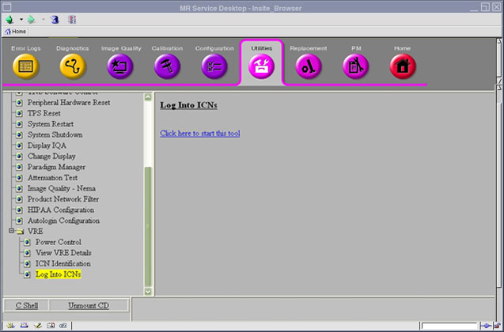

Operating Documentation
Direction 5500113, Rev# 3
Discovery MR750 3.0T Service Methods
Module Version 3.0, Version Date 9/21/10
Operating Documentation |
| Required Persons | Preliminary Reqs | Procedure | Finalization |
|---|---|---|---|
| 1 | Not Applicable | Not Applicable | Not Applicable |
Logging into the ICNs displays the ICN output, especially for the OS load. The login function is also useful for viewing the ICN boot process and installation without connecting to an external monitor. This functional check is usually generated when there is a problem with the ICN, such as the ICN failing during a boot-up.
On the Common Service Desktop, select [Utilities], VRE, Log Into ICNs.
Illustration 1: Log into ICNs

Click the link: Click here to start this tool.
When the Information window (shown below) displays for acceptance of Java warnings, click [OK].
Illustration 2: Information Window
Wait for the window shown below to display the output of information for one ICN. If there are two ICNs, two windows display.
Illustration 3: ICN Output Display

No finalization steps.